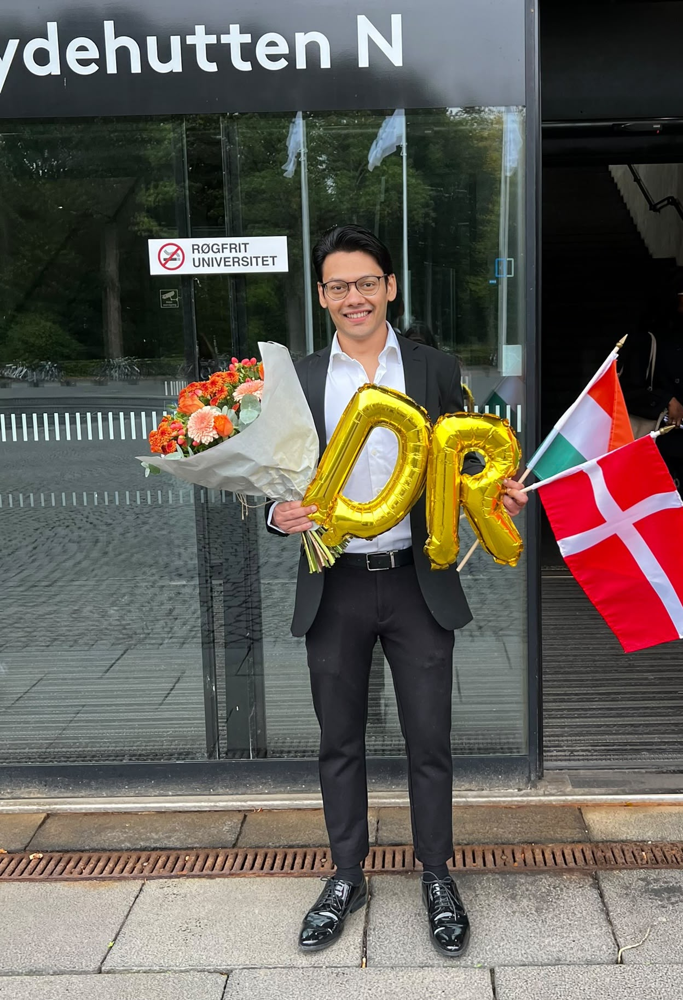

Shomrik Bhattacharya
Geometry and Mathematical Physics
PhD in Mathematics
University of Southern Denmark

Publications and Preprints
Preprints
-
Shomrik Bhattacharya, Yuki Matsubara
,
Fundamental groups of complements of wobbly divisors in intersections of two quadrics
,
[
arXiv:2609.31421
]
Here we give a method to calculate the above fundamental group for intersection of quadrics in any dimension. Intersection of two quadrics have a moduli theoretic interpretation. This calculation is important in determining the category of microsheaves on the moduli space of Higgs bundles, which in turn will give us the wrapped Fukaya category by Ganatra-Pardon-Shende.
-
Shomrik Bhattacharya
,
Discriminant locus - wobbly divisor correspondence
,
DOI:10.13140/RG.2.2.16213.18400
[
Discriminant locus - wobbly divisor correspondence
]
This paper proves a claim made by Prof. Nigel Hitchin in 2022.
-
Shomrik Bhattacharya
,
A Simpler Formulation of Finitely Generated Triangulated Categories
,
[
academia.edu
]
This was done right after my master's. It was my entry to the world of categories and an early discovery about the structure of triangulated categories. The idea came while reading Sheaves on Manifolds by Kashiwara-Schapira.
In Preparation
- Homological mirror symmetry for the moduli space of Higgs bundles.
Vision
My short-term goals are to prove homological mirror symmetry for Higgs budles and to formulate a rigorous correspondence between geometric Langlands and homological mirror symmetry. Especially show that geometric Langlands is a special instance of homological mirror symmetry. My long-term goal is to develop the mathematics behind some of the most fundamental phenomena of our universe. I wish to contribute towards a rigorous understanding of physical theories such as quantum field theory, string theory, and a possible quantum theory of gravity.
To this end I have undergone doctoral training in algebraic geometry, differential geometry, and representation theory. A unifying theme of my research is category theory. Category theory has wide-ranging application throughout physics, neuroscience, and computer science, including the development of large-language models for AI. A direct application of my research could be quantum computation, especially fault-tolerant quantum computation.
Teaching
University Teaching
Teaching Assistant at the University of Southern Denmark
- Curves and Surfaces - Autumn 2024
- Ordinary Differential Equations - Autumn 2024
- Logic and Linear Algebra - Autumn 2023
- Advanced Linear Algebra - Spring 2023
- Math Cafe - every semester (Sep 2022-Aug 2025)
Lecture Notes
I occasionally write notes on topics in algebraic geometry and topology.
Contact
Email: shomrikbhattacharya@hotmail.com
University of Southern Denmark
Department of Mathematics
Odense, Denmark